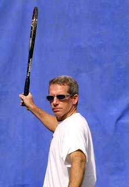
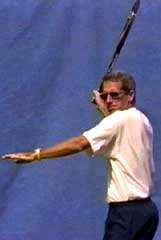
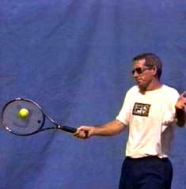
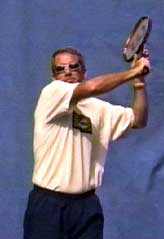

Previous: Maximizing Player and Coach Relationships - Part 2 | 🏠 Classic Lessons Home | Next: Modern Forehand - Lag and Snap Or Lag and Stroke
Private Lessons: Measuring Ball Height
Comprehensive unified tennis knowledge base — Fundamentals, Stroke Analysis, Reference Library, and more
Private Lessons:Measuring Ball Height
By Kerry Mitchell
The Hitting Zone
One of the most common errors I see everyday in my teaching is the inability of students to find the "hitting zone," or the right contact position in the course of their swing. Players are obsessed with technical elements in their strokes - preparation, wrist position, follow-through, etc., but they consistently misjudge the height of the ball in the hitting zone. This is a major source of backcourt errors at all levels below the pro game.
Measuring ball height is the key to taking the ball at a comfortable height for your particular stroke.
Many of the most basic problems in tennis stem from the inability to measure ball height correctly, that is, in the hitting zone. These include making consistently late contact, reaching or flailing for the ball, and the inability to hit up on the ball and develop confidence in hitting with topspin.
The correct ball height at contact can range from the knees to the chest, depending on the grip and the particular stroke.
On the forehand side, the correct height is determined in large part by the grip position. For players with traditional grips, the optimum height is the lower half of this zone, from the knees to the waist. For players with western grips, the optimum height is the top half of the hitting zone, from the waist to the chest.
On the one-handed backhand, the optimum hitting height can vary depending on whether the choice is to slice (anywhere from the knees to the chest) or drive the ball (knees to waist). Players using two hands are most comfortable when the ball height is between the knees and the waist, but they can also modify their stance to deal with higher balls.

The most common error measuring ball height: believing the ball is going to be high in the hitting zone.
The Bounce
Ideally, players learn to measure the height of the oncoming ball and to position themselves to take the ball at a comfortable height suited to a particular stroke. In reality all players misjudge some balls. But players at lower levels struggle often for years without realizing their inability to measure the height of the ball is at the root of their stroke "problem".
Although players misjudge the ball in many ways, by far the most common error measuring ball height is the perception that the contact is going to be higher in the hitting zone than it actually is.
This in turn stems from two basic misperceptions about the flight of the ball. The first is the initial trajectory off the opponent's racket. The second is the height at which the ball crosses the net. If the initial trajectory of the ball is high and the ball is high when it crosses the net, players tend to conclude that the ball will inevitably be high in the hitting zone.
Although trajectory and net clearance offer information on depth and speed, they do not necessarily indicate contact height. They are less important than a third critical factor. Players who have problems measuring ball height tend to focus on the first two factors, but neglect the third.
This third factor is the reaction of the ball after the bounce. This is the most important factor because at this point, the ball is closest to the hitting zone. Unfortunately, it is also the factor club players pay least attention to.
At the club level, the "V" swing pattern - hitting down and then up in a "V" shape - results from the inability to correctly measure ball height.
Although players should definitely watch the initial trajectory and path of the ball over the net, too many players do only this without focusing on the bounce.
Watching the ball as it comes to the bounce, watching the bounce itself, and watching just after the bounce are critical to making contact at the right height in the hitting zone.
By watching the ball more closely as it moves through the bounce, players will begin to realize two things. First, the ball slows down an incredible amount due to the contact with the court. Second, because of this loss of speed, ball height can change quite dramatically, dropping lower in the hitting zone than the player anticipates.
This is the point where many players, however, have stopped watching the ball and already prejudged its height in the contact zone. By watching the ball more closely as it moves through the bounce and approaches the hitting zone, a player can learn to make better adjustments and reduce basic errors.
Most players realize a ball too high or too low in the hitting zone is hard to control. Controlling these types of balls are directly related to your ball tracking skills, and particularly, tracking the ball through the bounce.



The "V" Swing
Another point generally not recognized by students is that the ability to gauge the height of the ball accurately is directly related to preparation. As noted, players make the assumption that a high ball will remain high even after the bounce. Players operating under this assumption are also the ones who tend to start their preparation with a high back swing. This is a crucial error. A high back swing makes contact with the ball at the correct height very difficult. This is because the player has assumed the ball is going to be high and now waits for the ball to rise up to the racket.
The"V"swing: the player takes the racket back far too high, hits down to the contact, but still tries to lift the ball with a high finish.
This tendency to take the racket back too high is compounded by a number of other factors: the onslaught of the new powerful, high-tech rackets, club players' almost desperate belief about the need for heavy topspin, and the irresistible tendency to copy the large, circular backswings used by some elite pros.
For all these reasons, swing trajectories or the plane at which the racket travels through the hitting zone have become a real problem in today's game. No matter what the backswing, the racket need to move upwards on a smooth curve from low to high as it starts forward to the ball. This is just as true if not more true for the large circular backswings used by some pros.
Unfortunately, at the club level the modern swing shape is neither circular or low to high. Instead it is what I call "V" shaped. The racket, instead of dropping below the ball first and then coming up through the ball, comes straight down at the ball from the high initial backswing. The player then lifts the racket in a vain attempt to get the shot over the net. The "V" shaped swing creates a scooping or slicing action causing the ball to fly either way out or into the net.
The "V" shaped swing has another, often unintended, consequence and that is the westernization of the grip. The grip naturally slips under the handle, because with the "V" motion the player has a somewhat better chance of getting the ball back over the net with a more extreme grip. But this shift doesn't solve the problem, and it has the further negative effect of making lower balls more and more difficult hit (and thus to attack).

Kerry Mitchell was a leading Bay Area teaching pro for 20 years. He developed numerous ranked junior players and coached a series of championship high school teams. He was highly ranked both sectionally and nationally in men's 30 and 35 singles.
After 15 years as the Head Teaching Pro at the John Yandell Tennis School in San Francisco, California Kerry and his partner are now splitting time between homes in Merida, Mexico and Toronto, Canada. He has continued to coach and to have great competitive success winning Canadian National seniors titles—not to mention continuing to write articles for Tennisplayer from his unique perspective.
Source: tennisplayer.net archive — Measuring Ball Height.docx (John Yandell teaching library, 2002-2022). Extracted and rendered as HTML for Tennis Future Lab.